Examples¶
For each model we have developed an example so we can see how it works.
HICS Example¶
Full example: hics_example.py
Import model
from hics import HICS
Read the data to fit the model. The data should be in a numpy array:
dataset,labels = utils.readDataAbalone() #dataset,labels = utils.readDataYeast() #dataset, labels = utils.readDataCancer()
Initialize a
HICSdetector and fit the modelhics = HICS(verbose=True, outlier_rank="lof", contamination=0.1, M=100, alpha=0.1, numCandidates=500, maxOutputSpaces=1000, numThreads=8) hics.fit(dataset)
Get the plot of the scores colouring the anomalies in red.
import utils utils.obtainResults(hics)
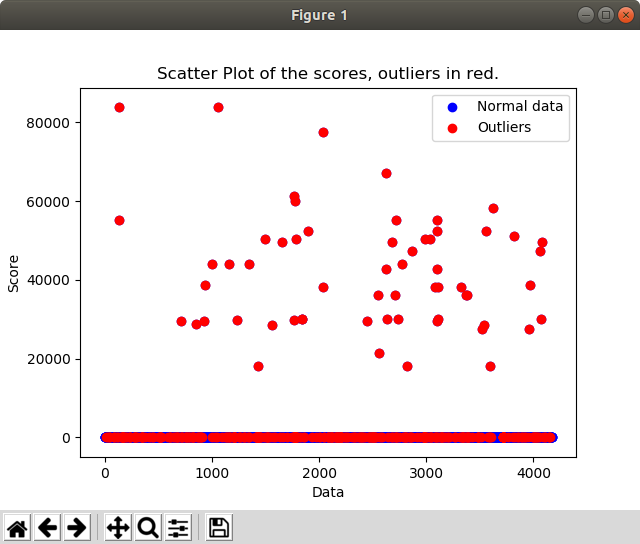Get some statistical information from the scores.
utils.obtainResults(hics) # Get the outliers outliers = hics.getOutliers() # Print the labels of the outliers print(labels[outliers])
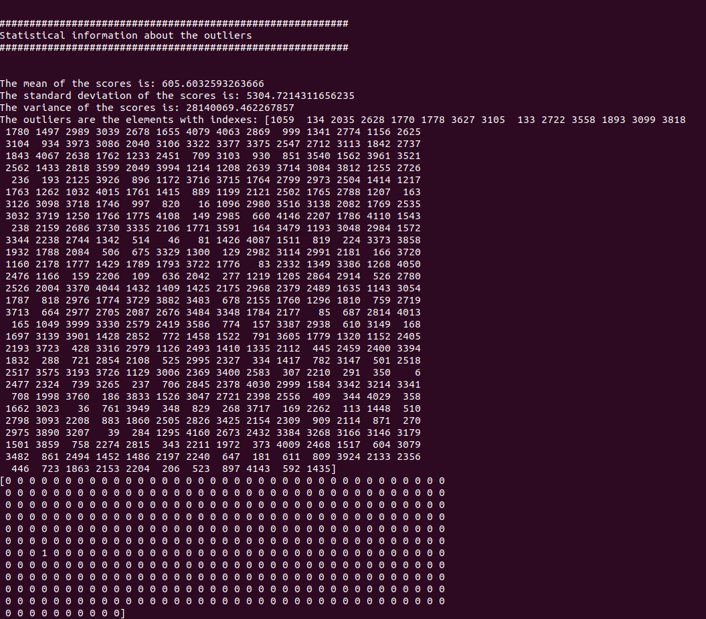Check if the anomalies obtained by the model are also obtained by pyod.
# Check if pyod models get the same anomalies print("Getting anomalies based on the voting system to check") cm, df = utils.checkAnomalies(dataset, outliers) print("Common ones: " + str(cm)) print("Different ones: " + str(df))
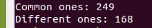
Mahalanobis Kernel Example¶
Full example: KernelMahalanobis_example.py
Import model
from KernelMahalanobis import KernelMahalanobis
Read the data to fit the model. The data should be in a numpy array:
dataset,labels = utils.readDataAbalone() #dataset,labels = utils.readDataYeast() #dataset, labels = utils.readDataCancer()
Initialize a
KernelMahalanobisdetector and fit the modelkernel_mahalanobis = KernelMahalanobis() kernel_mahalanobis.fit(dataset)
Get the plot of the scores colouring the anomalies in red.
import utils utils.obtainResults(kernel_mahalanobis)
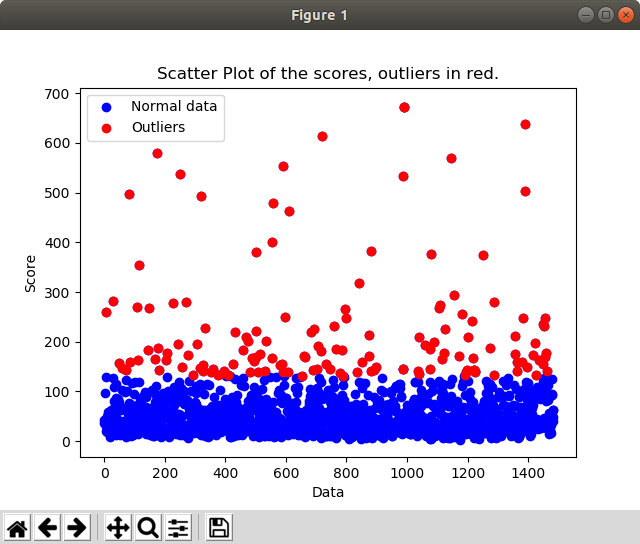Get some statistical information from the scores.
utils.obtainResults(kernel_mahalanobis) # Get the outliers outliers = kernel_mahalanobis.getOutliers() # Print the labels of the outliers print(labels[outliers])
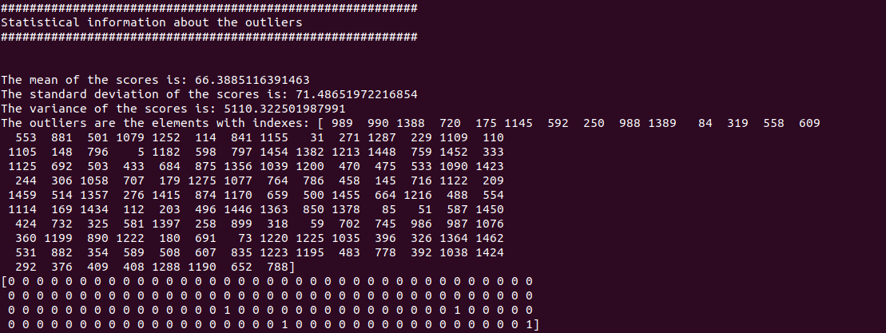Check if the anomalies obtained by the model are also obtained by pyod.
# Check if pyod models get the same anomalies print("Getting anomalies based on the voting system to check") cm, df = utils.checkAnomalies(dataset, outliers) print("Common ones: " + str(cm)) print("Different ones: " + str(df))
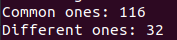
LODA Example¶
Full example: loda_example.py
Import model
from loda import LODA
Read the data to fit the model. The data should be in a numpy array:
#dataset,labels = utils.readDataAbalone() dataset,labels = utils.readDataYeast() #dataset, labels = utils.readDataCancer()
Initialize a
LODAdetector and fit the modelloda = LODA(n_bins=25, k=500) loda.fit(dataset)
Get the plot of the scores colouring the anomalies in red.
import utils utils.obtainResults(loda)
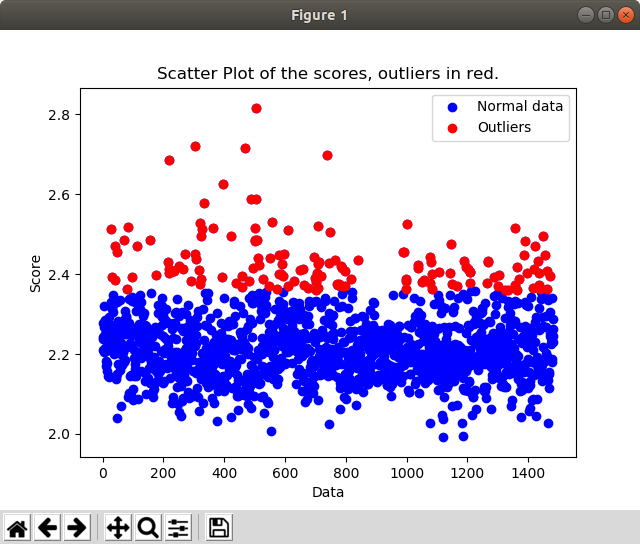Get some statistical information from the scores.
utils.obtainResults(loda) # Get the outliers outliers = loda.getOutliers() # Print the labels of the outliers print(labels[outliers])
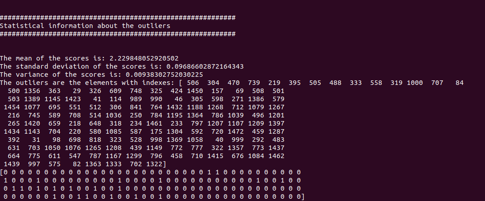Check if the anomalies obtained by the model are also obtained by pyod.
# Check if pyod models get the same anomalies print("Getting anomalies based on the voting system to check") cm, df = utils.checkAnomalies(dataset, outliers) print("Common ones: " + str(cm)) print("Different ones: " + str(df))
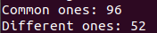
OUTRES Example¶
Full example: outres_example.py
Import model
from outres import OUTRES
Read the data to fit the model. The data should be in a numpy array:
#dataset,labels = utils.readDataAbalone() dataset,labels = utils.readDataYeast() #dataset, labels = utils.readDataCancer()
Initialize a
OUTRESdetector and fit the modeloutres = OUTRES(verbose=True, alpha=0.01) outres.fit(dataset)
Get the plot of the scores colouring the anomalies in red.
import utils utils.obtainResults(outres)
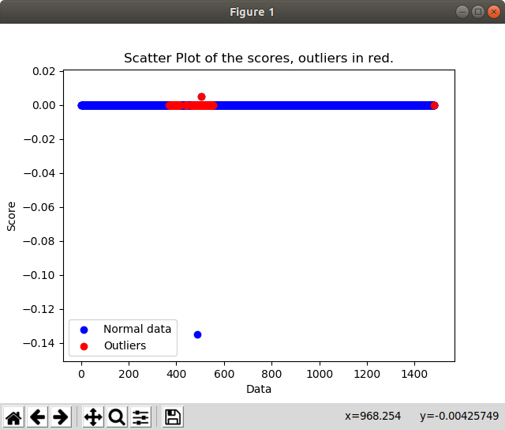Get some statistical information from the scores.
utils.obtainResults(outres) # Get the outliers outliers = outres.getOutliers() # Print the labels of the outliers print(labels[outliers])
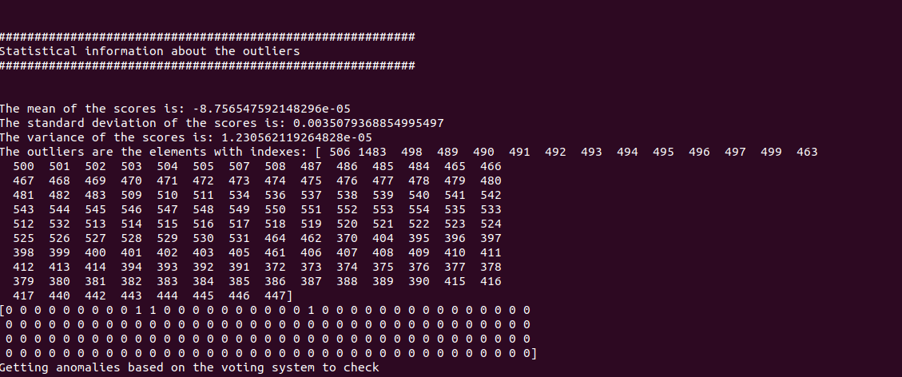Check if the anomalies obtained by the model are also obtained by pyod.
# Check if pyod models get the same anomalies print("Getting anomalies based on the voting system to check") cm, df = utils.checkAnomalies(dataset, outliers) print("Common ones: " + str(cm)) print("Different ones: " + str(df))
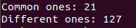
TRINITY Example¶
Full example: trinity_example.py
Import model
from trinity import TRINITY
Read the data to fit the model. The data should be in a numpy array:
#dataset,labels = utils.readDataAbalone() dataset,labels = utils.readDataYeast() #dataset, labels = utils.readDataCancer()
Initialize a
TRINITYdetector and fit the modeltrinity = TRINITY(verbose=True, alpha=0.01) trinity.fit(dataset)
Get the plot of the scores colouring the anomalies in red.
import utils utils.obtainResults(trinity)

Get some statistical information from the scores.
utils.obtainResults(trinity) # Get the outliers outliers = trinity.getOutliers() # Print the labels of the outliers print(labels[outliers])

Check if the anomalies obtained by the model are also obtained by pyod.
# Check if pyod models get the same anomalies print("Getting anomalies based on the voting system to check") cm, df = utils.checkAnomalies(dataset, outliers) print("Common ones: " + str(cm)) print("Different ones: " + str(df))